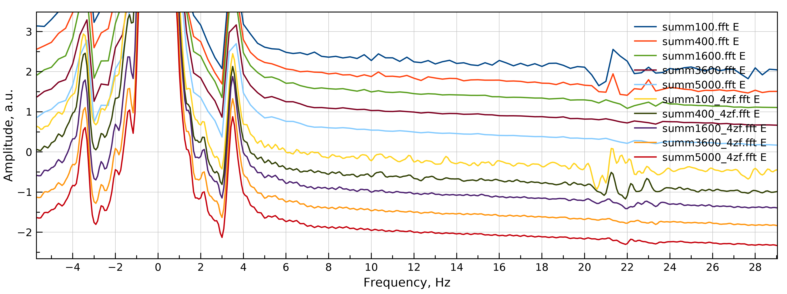

1. Оцифрованные сигналы с грунина в формате xxx.dat
2. вычисление частоты по первым 100 периодам
3. Формирование sin и cos по промежутку квантования с перемножением и получением комплексных компонент
4. Фурье продетектированных сигналов.
5. Сложение спектров
20.11.2019
Отдельно создана программа подсчёта частоты CalcFreq
Предполагается её использование с уже отфильтрованным с помощью FFT сигналом
Порядок использования программ:
1. FilterSignal - делает FFT, вырезает окно с сильной линией, делает обратное FFT, выдает отфильтрованный сигнал
2. CalcFreq - рассчитывает частоту отфильтрованного сигнала
3. ZeroSpectrum - детектирует исходный сигнал с опорным сигналом на частоте, полученным с помощью
21.11.2019
Создана CalcFreq. Работает нормально
30.11.2019
Создан комплект:
all - объединяет в себе предыдущие FilterSignal CalcFreq и ZeroSpectrum. Работает корректно. На выходе - окно с линией, по которой рассчитывается частота и спектр с этой линией в нуле или со сдвигом
Входные данные: 1. Файл, 2. Количество периодов, по которым делается расчёт частоты, 3. Cдвиг (Гц) влево (для того, чтобы рассмотреть левую часть спектра)
Перебор файлов осуществляется bash-скриптом summ.bat, в котором задается диапазон номеров файлов с сигналом
summ - создаёт накопленный спектр
Входные данные: 1. Количество файлов, 2. Количество отсчётов в спектре, 3. Нормировка (максимуим линии)
Добавил zerofilling и апподизацию
На измерении частоты zerofilling почти не сказался (незначительно где-то во втором знаке после запятой):
А вот на спектре есть интересные наблюдения:
Четырехкратное добавление нулей проявило дополнительные линии на 1.5, 2, 4.75, Гц от нулевой частоты
При сильной апподизации сигнал заметно укоротился и линия уширилась. Проявившиеся линии слизались.
Разумная апподизация несколько сгладила сомнительные линии.
Это при 500 повторениях
При 5000 повторениях...
1.09.2019
Вчера выяснилось, что все эти спектры с одного скана. Просто не происходило суммирование из-за того, что внутри цикла стояло условие отслеживания максимума для нормирования и вместо "==" стоял один знак "=" и переменная цикла на первом же круге переполнялась...

Здесь сверху вниз идёт сначала увеличение количества повторений, а потом то же самое, но с 4-х кратным дополнением нулями. Видно, что 1600 - это чистовое для очень слабых линий. И ещё хорошо видно, какспектр очищается от сильной 50-герцовой помехи справа.
Апподизацию можно попробовать при 100 и 400 повторениях...
Сравнение двух спектров от разных экспериментов показало, что говорить что-то о линиях 13C можно на частоте 2.75Гц и то с сомнением
Вернулся к бензолу: при напкоплениях, сделанных на частоте резонанса обнаружились линии порядка 1:100 к основной линии с КССВ 8Гц
На спектрах со сдвигом частоты вправо на 50 Гц - чисто, не считая 5--герцовых гармоник:
к вечеру выяснилось, что не стоит делать zerofilling, видимо, сигнал смещён относительно нуля - с этим надо поработать
14.12.2019
Многое не писал. Стал использовать реальную составляющую спектра, которая даёт более тонкую линию. Необходимо использовать функцию, которая выравнивает фазу.
В Magicplot это выглядит следующим образом: col(B)*sin(col(A)*cell(G,1)+cell(G,2))+col(C)*cos(col(A)*cell(G,1)+cell(G,2)), где col(А) - столбец с отсчётами спектра, col(B) - столбец с Re-значениями спектра, а col(C) - с Im-значениями. В ячейках cell(G,1) и cell(G,2) лежат коэффициенты. Основным является cell(G,2), а cell(G,1) можно оставлять нулевым - это осцилляция спектра, с ней сложно работать.
Далее разработанный алгоритм заработал, как и следовало и были получены спектры с линиями взаимолдействия протонов с ядрами 13С:
в бензоле:
в уксусной кислоте:
оказывается что 100 повторений вполне достаточно, но при компенсации флуктуаций
Апподизация синусом:
даёт очень хороший результат:
15.12.2019
Идея погасить небольшие осцилляции спектра, связанные с небольшим сдвигом нуля сигнала, оказались безуспешными:
Спектр с точками - простое четырёхкратное дополнение нулями. Пары сверху и снизу - попытки добавить небольшие сдвиги, расчитанные как корень из интеграла всего сигнала. Близкие к спектру с точками кривые - рассчитанные сдвиги только по реальной части сигнала, а, которые подальше - по обеим частям (только сейчас дошло, что они одинаковые). Разница между верхними и нижними - вычитание или прибавление сдвига...